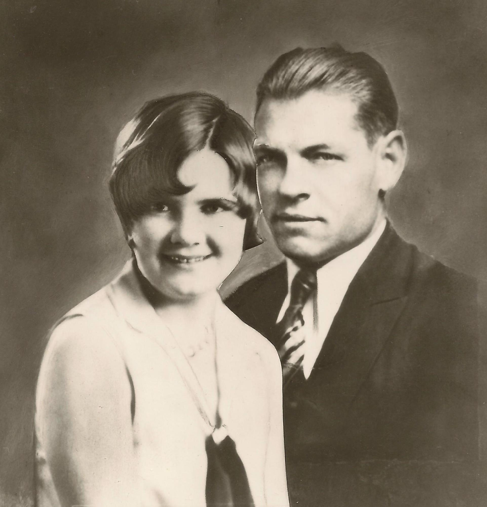

Writings of Alice Isom Gubler Stratton

Alice Isom Gubler Stratton (1910-2000) and Henry Winferd Gubler (1897-1949)
Alice's Works
- Nonfiction Book: Look to the Stars (Table of Contents)
- Nonfiction: MY TESTIMONY
- Nonfiction: Alice's 1998 Christmas Letter to Her Posterity
- Nonfiction: "The Lamplighters", by Alice Gubler, short story, published in The Relief Society Magazine, vol. 49, no. 3, pp. 207-210, March 1962
- "Mama and the Heavenly Father", by Alice Gubler, short story dramatization of one of the author's actual childhood experiences, published in The Relief Society Magazine, vol. 49, no. 7, pp. 490-494, July 1962
- "Adjustment", by Alice Gubler Sabin, short fictional story based on an actual event in Alice's life, published in The Relief Society Magazine, vol. 51, no. 5, pp. 334-337, May 1964
- "The Someday Vacation", by Alice Gubler Sabin, short story, published in The Relief Society Magazine, vol. 51, no. 8, pp. 558-591, August 1964
- "When Upon Life's Billows", by Alice Gubler Sabin, short story, published in The Relief Society Magazine, vol. 52, no. 6, pp. 416-421, June 1965
- "Don't Feel Sorry for Me", by Alice Gubler Sabin, short story, published in The Relief Society Magazine, vol. 52, no. 7, pp. 517-520, July 1965
- "The Golden Bowl", by Alice Gubler Sabin, short story inspired by the author's childhood memory of two glass bowls her sisters bought as Christmas gifts for their mother, published in The Relief Society Magazine, vol. 54, no. 11, pp. 823-828, November 1967
- "A Piteous Day", by Alice Stratton, short story based on an actual childhood experience, published in The Relief Society Magazine, vol. 56, no. 5 pp. 338-342, May 1969
- "Home Safe", by Alice Stratton, published in Friend, September 1975, p. 48.
- "The Happy Tithe Payer" by Alice Stratton, published in Friend, May 1976, p. 2.
- "I Know He Lives", by Alice Stratton, published in Friend, June 1976, p. 10. The short story is based on an actual childhood experience
- "Not Spunk, Faith!", by Alice Stratton, published in Friend, January 1977, p. 46.
- "Rebecca Repents", by Alice Stratton, published in Friend, October 1977, p. 36.
- "Baptism Is a Family Affair" by Alice Stratton, published in Friend, November 1977, p. 46, and also in Tambuli, August 1978, p. 27. (Tambuli was the name for the English-language publication of Liahona)
- "Double Blessing" by Alice Stratton, published in Friend, May 1978, p. 2.
- "When Children Pray" by Alice Stratton, published in Friend, August 1978, p. 42.
- "The Not-So-Pitiful Thanksgiving" by Alice Stratton, published in Friend, November 1979, p. 2.
- "Mail-Order Christmas", by Alice Stratton, published in Friend, December 1981, p. 4.
- "Will Robins Go to Heaven?" by Alice Stratton, published in Friend, April 1982, p. 39, and also in Tambuli, January 1983, p. C6.. (Tambuli was the name for the English-language publication of Liahona)
- "Easter Discovery", by Alice Stratton, published in Friend, April 1981, p. 17.
- "Ellen Goes to America (Part 1)" by Alice Stratton, published in Friend, October 1982, p. 10.
- "Ellen Goes to America (Part 2)" by Alice Stratton, published in Friend, November 1982, p. 10.
- "The Gift of the Holy Ghost" by Alice Stratton, published in Friend, April 1984, p. 43, and also in Tambuli, August 1985, p. 1. ( Tambuli was the name for the English-language publication of Liahona)
- Safely Home by Alice Stratton, published in Friend, January 1988, p. 40.
- "Coal Pitts", by Alice Stratton, published in Friend, August 1990, p. 27.
- "So This Is LaVerkin", screenplay by Alice Stratton, premiere October 1991
- "Family Reunion", by Alice Stratton, published in Friend, August 1995, p. 8.
- "The Story of the Hurricane Canal", by Alice Gubler Stratton, as published in St. George Magazine's book "This Is Hurricane: A City of History and Destiny", 1991
Quotes or References to Alice or Her Works
- Alice is quoted in "The First Cars in Two Small Towns", an article for History Blazer (October 1996) written by W. Paul Reeve and currently available online on the Utah History to Go web site.
- Alice's book "Look to the Stars" is referenced in "Young Alice Stratton Feared and Then Made Fun of 'Kaiser Bill'", an article for History Blazer (August 1995) written by W. Paul Reeve and currently available online on the Utah History to Go web site.
- Alice's "The Story of the Hurricane Canal" is referenced multiple times in Lesley Thacker's web page, "The Hurricane Canal Trail Guide Online"
What Others Have to Say
This section includes things written or said, online or elsewhere, about Alice or her works, by friends, acquaintances, family members, or even strangers.
- Alice's daughter, Lolene, reminisces about her mother in a 'blog post "Mulberry Trees are Brazen!" in November 2009 -- scroll down to the "Missing Mother" section. Also see the comments by others who visited the 'blog.
- A news summary article published Saturday, October 26, 1991 in the Church News (LDS) titled From around the world mentions the showing of the Brian T. Gubler video production "So This Is La Verkin" that Alice Stratton, then 82, of the La Verkin 1st Ward, La Verkin Utah Stake scripted.
- Victor Hall mentions Alice Isom Gubler several times in chapter 4 of his online essay, "Village Life Prior to World War II"
Related Information
-
Alice's husband, Winferd, is descended from Susanna Mehitable Rogers Sangiovanni Pickett Keate, whose biography, titled In Search of Living Water, by Jane Topham, is online in PDF format on this web page:
- Alice's mother killed a mountain lion not far from where Alice was born in 1909 according to the Washington County News.